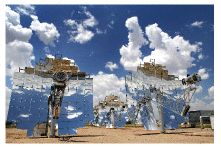
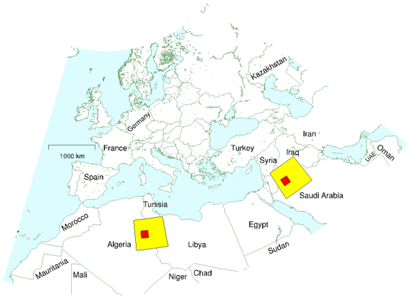
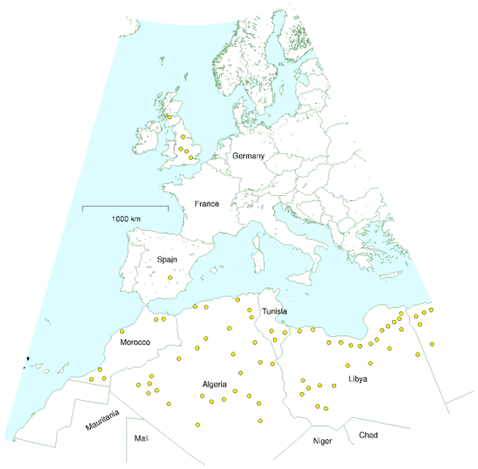
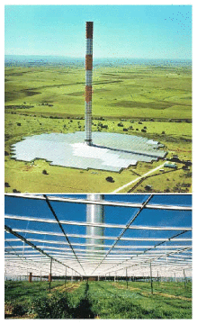
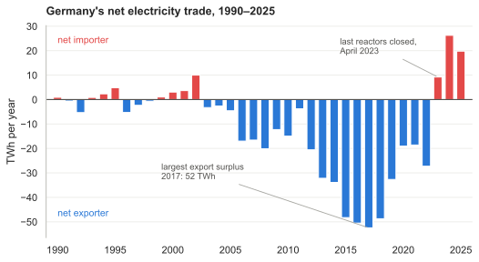
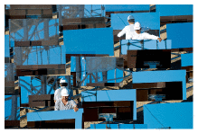

25 Living on other countries’ renewables?
Whether the Mediterranean becomes an area of cooperation or confrontation in the 21st century will be of strategic importance to our common security.
Joschka Fischer, German Foreign Minister, February 2004
We’ve found that it’s hard to get off fossil fuels by living on our own renewables. Nuclear has its problems too. So what else can we do? Well, how about living on someone else’s renewables? (Not that we have any entitlement to someone else’s renewables, of course, but perhaps they might be interested in selling them to us.)
| Technology | Power per unit land or water area |
|---|---|
| Wind | 2 W/m2 |
| Offshore wind | 3 W/m2 |
| Tidal pools | 3 W/m2 |
| Tidal stream | 6 W/m2 |
| Solar PV panels | 5–20 W/m2 |
| Plants | 0.5 W/m2 |
| Rain-water (highlands) | 0.24 W/m2 |
| Hydroelectric facility | 11 W/m2 |
| Solar chimney | 0.1 W/m2 |
| Concentrating solar power (desert) | 15 W/m2 |
Table 25.1. Renewable facilities have to be country-sized because all renewables are so diffuse.
Most of the resources for living sustainably are related to land area: if you want to use solar panels, you need land to put them on; if you want to grow crops, you need land again. Jared Diamond, in his book Collapse, observes that, while many factors contribute to the collapse of civilizations, a common feature of all collapses is that the human population density became too great.
Places like Britain and Europe are in a pickle because they have large population densities, and all the available renewables are diffuse – they have small power density (table 25.1). When looking for help, we should look to countries that have three things: a) low population density; b) large area; and c) a renewable power supply with high power density.
| Region | Population | Area (km2) |
Density (persons per km2) |
Area per person (m2) |
|---|---|---|---|---|
| Libya | 5 760 000 | 1 750 000 | 3 | 305 000 |
| Kazakhstan | 15 100 000 | 2 710 000 | 6 | 178 000 |
| Saudi Arabia | 26 400 000 | 1 960 000 | 13 | 74 200 |
| Algeria | 32 500 000 | 2 380 000 | 14 | 73 200 |
| Sudan | 40 100 000 | 2 500 000 | 16 | 62 300 |
| World | 6 440 000 000 | 148 000 000 | 43 | 23 100 |
| Scotland | 5 050 000 | 78 700 | 64 | 15 500 |
| European Union | 496 000 000 | 4 330 000 | 115 | 8 720 |
| Wales | 2 910 000 | 20 700 | 140 | 7 110 |
| United Kingdom | 59 500 000 | 244 000 | 243 | 4 110 |
| England | 49 600 000 | 130 000 | 380 | 2 630 |
Table 25.2. Some regions, ordered from small to large population density. See chapter J for more population densities.

Figure 25.3. Stirling dish engine. These beautiful concentrators deliver a power per unit land area of 14 W/m2. Photo courtesy of Stirling Energy Systems. www.stirlingenergy.com
(Figure omitted from this edition: third-party rights.)
Figure 25.4. Andasol – a “100MW” solar power station under construction in Spain. Excess thermal energy produced during the day will be stored in liquid salt tanks for up to seven hours, allowing a continuous and stable supply of electric power to the grid. The power station is predicted to produce 350 GWh per year (40 MW). The parabolic troughs occupy 400 hectares, so the power per unit land area will be 10 W/m2. Upper photo: ABB. Lower photo: IEA SolarPACES.
Table 25.2 highlights some countries that fit the bill. Libya’s population density, for example, is 70 times smaller than Britain’s, and its area is 7 times bigger. Other large, area-rich, countries are Kazakhstan, Saudi Arabia, Algeria, and Sudan.
In all these countries, I think the most promising renewable is solar power, concentrating solar power in particular, which uses mirrors or lenses to focus sunlight. Concentrating solar power stations come in several flavours, arranging their moving mirrors in various geometries, and putting various power conversion technologies at the focus – Stirling engines, pressurized water, or molten salt, for example – but they all deliver fairly similar average powers per unit area, in the ballpark of 15 W/m2.
A technology that adds up
“All the world’s power could be provided by a square 100 km by 100 km in the Sahara.” Is this true? Concentrating solar power in deserts delivers an average power per unit land area of roughly 15 W/m2. 1 So, allowing no space for anything else in such a square, the power delivered would be 150 GW. This is not the same as current world power consumption. It’s not even near current world electricity consumption, which is 2000 GW. World power consumption today is 15 000 GW. So the correct statement about power from the Sahara is that today’s consumption could be provided by a 1000 km by 1000 km square in the desert, completely filled with concentrating solar power. That’s four times the area of the UK. And if we are interested in living in an equitable world, we should presumably aim to supply more than today’s consumption. To supply every person in the world with an average European’s power consumption (125 kWh/d), the area required would be two 1000 km by 1000 km squares in the desert.
Fortunately, the Sahara is not the only desert, so maybe it’s more relevant to chop the world into smaller regions, and ask what area is needed in each region’s local desert. So, focusing on Europe, “what area is required in the North Sahara to supply everyone in Europe and North Africa with an average European’s power consumption? Taking the population of Europe and North Africa to be 1 billion, the area required drops to 340 000 km2, which corresponds to a square 600 km by 600 km. This area is equal to one Germany, to 1.4 United Kingdoms, or to 16 Waleses.
The UK’s share of this 16-Wales area would be one Wales: a 145 km by 145 km square in the Sahara would provide all the UK’s current primary energy consumption. These squares are shown in figure 25.5. Notice that while the yellow square may look “little” compared with Africa, it does have the same area as Germany.

Figure 25.5. The celebrated little square. This map shows a square of size 600 km by 600 km in Africa, and another in Saudi Arabia, Jordan, and Iraq. Concentrating solar power facilities completely filling one such square would provide enough power to give 1 billion people the average European’s consumption of 125 kWh/d. The area of one square is the same as the area of Germany, and 16 times the area of Wales. Within each big square is a smaller 145 km by 145 km square showing the area required in the Sahara – one Wales – to supply all British power consumption.
The DESERTEC plan
An organization called DESERTEC [www.desertec.org] is promoting a plan to use concentrating solar power in sunny Mediterranean countries, and high-voltage direct-current (HVDC) transmission lines (figure 25.7) to deliver the power to cloudier northern parts. HVDC technology has been in use since 1954 to transmit power both through overhead lines and through submarine cables (such as the interconnector between France and England). It is already used to transmit electricity over 1000-km distances in South Africa, China, America, Canada, Brazil, and Congo. 2 A typical 500 kV line can transmit a power of 2 GW. A pair of HVDC lines in Brazil transmits 6.3 GW.
HVDC is preferred over traditional high-voltage AC lines because less physical hardware is needed, less land area is needed, and the power losses of HVDC are smaller. The power losses on a 3500 km-long HVDC line, including conversion from AC to DC and back, would be about 15%. 3 A further advantage of HVDC systems is that they help stabilize the electricity networks to which they are connected.
In the DESERTEC plans, the prime areas to exploit are coastal areas, because concentrating solar power stations that are near to the sea can deliver desalinated water as a by-product – valuable for human use, and for agriculture.
Table 25.6 shows DESERTEC’s estimates of the potential power that could be produced in countries in Europe and North Africa. The “economic potential” adds up to more than enough to supply 125 kWh per day to 1 billion people. The total “coastal potential” is enough to supply 16 kWh per day per person to 1 billion people.
| Country |
Economic potential (TWh/y) |
Coastal potential (TWh/y) |
|---|---|---|
| Algeria | 169 000 | 60 |
| Libya | 140 000 | 500 |
| Saudi Arabia | 125 000 | 2 000 |
| Egypt | 74 000 | 500 |
| Iraq | 29 000 | 60 |
| Morocco | 20 000 | 300 |
| Oman | 19 000 | 500 |
| Syria | 10 000 | 0 |
| Tunisia | 9 200 | 350 |
| Jordan | 6 400 | 0 |
| Yemen | 5 100 | 390 |
| Israel | 3 100 | 1 |
| UAE | 2 000 | 540 |
| Kuwait | 1 500 | 130 |
| Spain | 1 300 | 70 |
| Qatar | 800 | 320 |
| Portugal | 140 | 7 |
| Turkey | 130 | 12 |
| Total |
620 000 (70 000 GW) |
6 000 (650 GW) |
Table 25.6. Solar power potential in countries around and near to Europe. The “economic potential” is the power that could be generated in suitable places where the direct normal irradiance is more than 2000 kWh/m2/y. The “coastal potential” is the power that could be generated within 20 m (vertical) of sea level; such power is especially promising because of the potential combination with desalination. For comparison, the total power required to give 125 kWh per day to 1 billion people is 46 000 TWh/y (5 200 GW). 6000 TWh/y (650 GW) is 16 kWh per day per person for 1 billion people.
(Figure omitted from this edition: third-party rights.)
Figure 25.7. Laying a high-voltage DC link between Finland and Estonia. A pair of these cables transmit a power of 350 MW. Photo: ABB.
Let’s try to convey on a map what a realistic plan could look like. Imagine making solar facilities each having an area of 1500 km2 – that’s roughly the size of London. (Greater London has an area of 1580 km2; the M25 orbital motorway around London encloses an area of 2300 km2.) Let’s call each facility a blob. Imagine that in each of these blobs, half the area is devoted to concentrating power stations with an average power density of 15 W/m2, leaving space around for agriculture, buildings, railways, roads, pipelines, and cables. Allowing for 10% transmission loss between the blob and the consumer, each of these blobs generates an average power of 10 GW. Figure 25.8 shows some blobs to scale on a map. To give a sense of the scale of these blobs I’ve dropped a few in Britain too. Four of these blobs would have an output roughly equal to Britain’s total electricity consumption (16 kWh/d per person for 60 million people). Sixty-five blobs would provide all one billion people in Europe and North Africa with 16 kWh/d per person. Figure 25.8 shows 68 blobs in the desert.

Figure 25.8. Each circular blob represents an area of 1500 km2, which, if one-half-filled with solar power facilities, would generate 10 GW on average. 65 such blobs would provide 1 billion people with 16 kWh/d per person.
Concentrating photovoltaics
(Figure omitted from this edition: third-party rights.)
Figure 25.9. A 25 kW (peak) concentrator photovoltaic collector produced by Californian company Amonix. Its 225 m2 aperture contains 5760 Fresnel lenses with optical concentration ×260, each of which illuminates a 25%-efficient silicon cell. One such collector, in an appropriate desert location, generates 138 kWh per day – enough to cover the energy consumption of half an American. Note the human providing a scale. Photo by David Faiman.
An alternative to concentrating thermal solar power in deserts is large-scale concentrating photovoltaic systems. To make these, we plop a high-quality electricity-producing solar cell at the focus of cheap lenses or mirrors. Faiman et al. (2007) say that “solar, in its concentrator photovoltaics variety, can be completely cost-competitive with fossil fuel [in desert states such as California, Arizona, New Mexico, and Texas] without the need for any kind of subsidy.”
According to manufacturers Amonix, 4 this form of concentrating solar power would have an average power per unit land area of 18 W/m2.
Another way to get a feel for required hardware is to personalize. One of the “25 kW” (peak) collectors shown in figure 25.9 generates on average about 138 kWh per day; the American lifestyle currently uses 250 kWh per day per person. So to get the USA off fossil fuels using solar power, we need roughly two of these 15 m×15 m collectors per person.
Queries
I’m confused! In Chapter 6, you said that the best photovoltaic panels deliver 20 W/m2 on average, in a place with British sunniness. Presumably in the desert the same panels would deliver 40 W/m2. So how come the concentrating solar power stations deliver only 15–20 W/m2? Surely concentrating power should be even better than plain flat panels?
Good question. The short answer is no. Concentrating solar power does not achieve a better power per unit land area than flat panels. The concentrating contraption has to track the sun, otherwise the sunlight won’t be focused right; once you start packing land with sun-tracking contraptions, you have to leave gaps between them; lots of sunlight falls through the gaps and is lost. The reason that people nevertheless make concentrating solar power systems is that, today, flat photovoltaic panels are very expensive, and concentrating systems are cheaper. The concentrating people’s goal is not to make systems with big power per unit land area. Land area is cheap (they assume). The goal is to deliver big power per dollar.
But if flat panels have bigger power density, why don’t you describe covering the Sahara desert with them?
Because I am trying to discuss practical options for large-scale sustainable power production for Europe and North Africa by 2050. My guess is that by 2050, mirrors will still be cheaper than photovoltaic panels, so concentrating solar power is the technology on which we should focus.
What about solar chimneys?

Figure 25.10. The Manzanares prototype solar chimney. Photos from solarmillennium.de.
A solar chimney or solar updraft tower uses solar power in a very simple way. 5 A huge chimney is built at the centre of an area covered by a transparent roof made of glass or plastic; because hot air rises, hot air created in this greenhouse-like heat-collector whooshes up the chimney, drawing in cooler air from the perimeter of the heat-collector. Power is extracted from the air-flow by turbines at the base of the chimney. Solar chimneys are fairly simple to build, but they don’t deliver a very impressive power per unit area. A pilot plant in Manzanares, Spain operated for seven years between 1982 and 1989. The chimney had a height of 195 m and a diameter of 10 m; the collector had a diameter of 240 m, and its roof had 6000 m2 of glass and 40 000 m2 of transparent plastic. It generated 44 MWh per year, which corresponds to a power per unit area of 0.1 W/m2. Theoretically, the bigger the collector and the taller the chimney, the bigger the power density of a solar chimney becomes. The engineers behind Manzanares reckon that, at a site with a solar radiation of 2300 kWh/m2 per year (262 W/m2), a 1000 m-high tower surrounded by a 7 km-diameter collector could generate 680 GWh per year, an average power of 78 MW. That’s a power per unit area of about 1.6 W/m2, which is similar to the power per unit area of windfarms in Britain, and one tenth of the power per unit area I said concentrating solar power stations would deliver. It’s claimed that solar chimneys could generate electricity at a price similar to that of conventional power stations. I suggest that countries that have enough land and sunshine to spare should host a big bake-off contest between solar chimneys and concentrating solar power, to be funded by oil-producing and oil-consuming countries.
What about getting power from Iceland, where geothermal power and hydroelectricity are so plentiful?
(Figure omitted from this edition: third-party rights.)
Figure 25.11. More geothermal power in Iceland. Photo by Rosie Ward.
Indeed, Iceland already effectively exports energy by powering industries that make energy-intensive products. Iceland produces nearly one ton of aluminium per citizen per year, for example! So from Iceland’s point of view, there are great profits to be made. But can Iceland save Europe? I would be surprised if Iceland’s power production could be scaled up enough to make sizeable electricity exports even to Britain alone. As a benchmark, let’s compare with the England–France Interconnector, which can deliver up to 2 GW across the English Channel. That maximum power is equivalent to 0.8 kWh per day per person in the UK, roughly 5% of British average electricity consumption. Iceland’s average geothermal electricity generation is just 0.3 GW, which is less than 1% of Britain’s average electricity consumption. Iceland’s average electricity production is 1.1 GW. 6 So to create a link sending power equal to the capacity of the French interconnector, Iceland would have to triple its electricity production. To provide us with 4 kWh per day per person (roughly what Britain gets from its own nuclear power stations), Iceland’s electricity production would have to increase ten-fold. It is probably a good idea to build interconnectors to Iceland, but don’t expect them to deliver more than a small contribution.
The reverse case, and the politics of it
A note added in the 2026 revision. MacKay frames this chapter as Britain buying other countries’ renewables. The 2020s produced a live example running the other way. Germany closed its last three nuclear reactors in April 2023 and, for the first time in many years, became a net electricity importer, drawing on hydro- and wind-rich Scandinavia.7 Because the Nordic and continental markets are coupled by interconnectors, German demand now reaches Swedish bills, and southern Sweden, wired directly to Germany, saw its prices rise. Swedish ministers publicly blamed Germany’s nuclear exit for higher prices at home.8 The counter-argument is that the feared German price spike never arrived: a year on, Germany had record renewable output and falling wholesale prices.9 So the dispute is less about a supply crisis than about who bears the cost of a coupled market, which is the question MacKay’s cheerful “living on someone else’s renewables” leaves open. The same coupling sits under the cannibalization model on the companion site.10
The trade figures show the turn plainly, and also show that it did not begin in 2023. Germany ran an export surplus for two decades, peaking at 52 TWh in 2017 — roughly a sixth of everything Britain generates in a year, sold across the border. That surplus then shrank year by year as coal and lignite plants closed, and 2023 was simply the year it crossed zero. Net imports came to 26 TWh in 2024 and 20 TWh in 2025, about 6% of German supply: small in itself, but it is the sign of the number, not its size, that the politics fastened on.11

There is a sharper case than the wholesale market, and it is a cable that was never built. The Hansa PowerBridge would have been a second link between Sweden and Germany: 700 MW, about 300 km, some 600 million euros, shared between the two grid operators and due around 2035. Sweden rejected it in June 2024, because it would have connected Germany to SE4, the southern Swedish bidding zone where prices are already the highest in the country. In 2024 the SE4 average was 50 EUR/MWh against 25 in the north, and 78 in Germany — and a cable pulls the low price up towards the high one.
An open-access study in Energy Policy modelled exactly this and found the Swedish objection to be well founded, not merely political.12 Building the link raises total welfare in both countries, by about 69 million euros a year in Sweden and 77 million in Germany in 2035. But inside Sweden the gain is unevenly placed: Swedish producers gain roughly 176 million while Swedish consumers lose about 106 million, and German consumers gain 455 million. The country is better off and the people paying the bills are worse off. That is the whole difficulty of MacKay’s chapter stated in one line: the arithmetic of “living on someone else’s renewables” can add up nationally and still fail the household, and no amount of insisting on the total will settle it.
The same study is more useful for what it does next, which is to ask what would fix it. Splitting the interconnector’s costs and revenues unevenly in Sweden’s favour is not enough on its own. Handing Swedish consumers the extra profits that the state-owned utility Vattenfall would earn is not enough on its own either. Doing both makes the project Pareto-improving, meaning nobody ends up worse off. So does something else entirely: splitting Germany’s single bidding zone in two, which shrinks the north-German-to-southern-Swedish price gap and with it the Swedish price rise, and then no transfers are needed at all. The obstacle to living on a neighbour’s renewables, in other words, is not the physics or the cost of the cable. It is that the winnings land on one side of the meter and the losses on the other, and Europe has not built the plumbing to move them back.
Notes and further reading

Figure 25.12. Two engineers assembling an eSolar esolar.com concentrating power station using heliostats (mirrors that rotate and tip to follow the sun). esolar.com make medium-scale power stations: a 33 MW (peak) power unit on a 64 hectare site. That’s 51 W/m2 peak, so I’d guess that in a typical desert location they would deliver about one quarter of that: 13 W/m2. esolar.com
(Figure omitted from this edition: third-party rights.)
Figure 25.13. A high-voltage DC power system in China. Photo: ABB.
Further reading: European Commission (2007), German Aerospace Center (DLR) Institute of Technical Thermodynamics Section Systems Analysis and Technology Assessment (2006), www.solarmillennium.de.
Concentrating solar power in deserts delivers an average power per unit area of roughly 15 W/m2. My sources for this number are two companies making concentrating solar power for deserts. www.stirlingenergy.com says one of its dishes with a 25 kW Stirling engine at its focus can generate 60 000 kWh/y in a favourable desert location. They could be packed at a concentration of one dish per 500 m2. That’s an average power of 14 W/m2. They say that solar dish Stirling makes the best use of land area, in terms of energy delivered. www.ausra.com uses flat mirrors to heat water to 285 °C and drive a steam turbine. The heated, pressurized water can be stored in deep metal-lined caverns to allow power generation at night. Describing a “240 MW(e)” plant proposed for Australia (Mills and LiÈvre, 2004), the designers claim that 3.5 km2 of mirrors would deliver 1.2 TWh(e); that’s 38 W/m2 of mirror. To find the power per unit land area, we need to allow for the gaps between the mirrors. Ausra say they need a 153 km by 153 km square in the desert to supply all US electric power (Mills and Morgan, 2008). Total US electricity is 3600 TWh/y, so they are claiming a power per unit land area of 18 W/m2. This technology goes by the name compact linear fresnel reflector (Mills and Morrison, 2000; Mills et al., 2004; Mills and Morgan, 2008). Incidentally, rather than “concentrating solar power,” the company Ausra prefers to use the term solar thermal electricity (STE); they emphasize the benefits of thermal storage, in contrast to concentrating photovoltaics, which don’t come with a natural storage option. Trieb and Knies (2004), who are strong proponents of concentrating solar power, project that the alternative concentrating solar power technologies would have powers per unit land area in the following ranges: parabolic troughs, 14–19 W/m2; linear fresnel collector, 19–28 W/m2; tower with heliostats, 9–14 W/m2; stirling dish, 9–14 W/m2. There are three European demonstration plants for concentrating solar power. Andasol – using parabolic troughs; Solúcar PS10, a tower near Seville; and Solartres, a tower using molten salt for heat storage. The Andasol parabolictrough system shown in figure 25.4 is predicted to deliver 10 W/m2. Solúcar’s “11 MW” solar tower has 624 mirrors, each 121 m2. The mirrors concentrate sunlight to a radiation density of up to 650 kW/m2. The receiver receives a peak power of 55 MW. The power station can store 20 MWh of thermal energy, allowing it to keep going during 50 minutes of cloudiness. It was expected to generate 24.2 GWh of electricity per year, and it occupies 55 hectares. That’s an average power per unit land area of 5 W/m2. (Source: Abengoa Annual Report 2003.) Solartres will occupy 142 hectares and is expected to produce 96.4 GWh per year; that’s a power density of 8 W/m2. Andasol and Solartres will both use some natural gas in normal operation.↩︎
HVDC is already used to transmit electricity over 1000-km distances in South Africa, China, America, Canada, Brazil, and Congo. Sources: Asplund (2004), Bahrman and Johnson (2007). Further reading on HVDC: Carlsson (2002).↩︎
Losses on a 3500 km-long HVDC line, including conversion from AC to DC and back,would be about 15%. Sources: Trieb and Knies (2004); van Voorthuysen (2008).↩︎
According to Amonix, concentrating photovoltaics would have an average power per unit land area of 18 W/m2. The assumptions of www.amonix.com are: the lens transmits 85% of the light; 32% cell efficiency; 25% collector efficiency; and 10% further loss due to shading. Aperture/land ratio of 1/3. Normal direct irradiance: 2222 kWh/m2/year. They expect each kW of peak capacity to deliver 2000 kWh/y (an average of 0.23 kW). A plant of 1 GW peak capacity would occupy 12 km2 of land and deliver 2000 GWh per year. That’s 18 W/m2.↩︎
Solar chimneys. Sources: Schlaich J (2001); Schlaich et al. (2005); Dennis (2006), www.enviromission.com.au, www.solarairpower.com.↩︎
Iceland’s average geothermal electricity generation is just 0.3 GW. Iceland’s average electricity production is 1.1 GW. These are the statistics for 2006: 7.3 TWh of hydroelectricity and 2.6 TWh of geothermal electricity, with capacities of 1.16 GW and 0.42 GW, respectively. Source: Orkustofnun National Energy Authority [www.os.is/page/energystatistics].↩︎
The electricity-import shift after the April 2023 nuclear exit: Clean Energy Wire, “Q&A – Germany’s nuclear exit: one year after”; on wider import dependence, Clean Energy Wire, “Germany and the EU remain heavily dependent on imported fossil fuels”.↩︎
Sweden’s criticism of German energy policy as prices rose: France 24, “Sweden sees red over Germany’s energy policy”, December 2024.↩︎
Fraunhofer ISE, “One year since Germany’s nuclear exit”, 2024; see also the German economy ministry’s earlier “get away from gas”, energiewende.bundeswirtschaftsministerium.de.↩︎
The cannibalization model and its references: https://oluies.github.io/elmix/modell/referenser.html .↩︎
Net electricity imports (imports minus exports), Ember via Our World in Data, https://ourworldindata.org/grapher/net-electricity-imports . The share of supply uses German generation of 431.7 TWh in 2024, from the Bundesnetzagentur’s 2024 electricity market data. UK generation for the 2017 comparison is about 290 TWh a year, from the same Our World in Data electricity dataset used elsewhere in this edition. Accounting bases differ: the Bundesnetzagentur’s commercial trade figures for 2023 are 54.1 TWh imported against 42.4 TWh exported, a net 11.7 TWh, where the Ember series plotted here gives 9.2 TWh. The sign and the shape of the turn are the same either way.↩︎
Polina Emelianova, Pia Hoffmann-Willers and Oliver Ruhnau, “Redistribution through cross-border electricity trade: How to achieve Pareto improvement for consumers?”, Energy Policy 218 (2026) 115522, https://doi.org/10.1016/j.enpol.2026.115522 , open access under CC BY. The welfare and surplus figures are their 2035 baseline case; the 2024 zonal prices in the paragraph above are theirs too, from ENTSO-E. The paper notes that the Swedish government signalled in early 2026 that it might reopen the project, conditional on Germany improving its price signals and adding baseload, so its fate is unsettled. Two other projects were stopped the same way: NorthConnect between Norway and the UK, cancelled in March 2023, and Eleclink 2 between Britain and France, paused by both regulators.↩︎